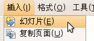
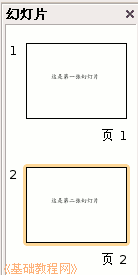
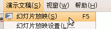

， 插入一个水平文本框，输入一段文字“这是第一张幻灯片”；
， 插入一个水平文本框，输入一段文字“这是第一张幻灯片”；OpenOffice.org 教程之 Impress 演示文稿
作者：TeliuTe 来源：基础教程网
一、插入新幻灯片 返回目录 下一课前面我们学习了一张幻灯片的基础操作，演示文稿是由许多张幻灯片组成的，下面我们来看一个练习；
1、 输入文字
1）启动Impress，点“创建”按钮，新建一个空白文档；
2）点下边“绘图”栏的“文字”按钮， 插入一个水平文本框，输入一段文字“这是第一张幻灯片”；
点击选中文本框边框，把文本框拖到幻灯片的中间摆好；
3）点菜单“文件－保存”命令，以“插入新幻灯片”为文件名保存文件到自己的文件夹；
2、 插入新幻灯片
1）点菜单“插入－新幻灯片”命令，自动出来一张空白幻灯片；

2）点下边“绘图”里的文字按钮， 插入一个水平文本框，输入文字“这是第二张幻灯片”；
点击选中文本框边框，把文本框拖到幻灯片的中间摆好，保存一下文件；
3）这时左边的窗格中出现两张幻灯片，其中第二张就是我们新插入的幻灯片；

4）在左边选中第一张幻灯片，再点菜单“演示文稿－幻灯片放映”，从头放映一下演示文稿，点一下鼠标左键就可以到第二张幻灯片；

本节学习了Impress中插入新幻灯片的基本操作，如果你成功地完成了练习，请继续学习下一课内容；
本教程由86团学校TeliuTe制作|著作权所有
基础教程网：http://teliute.org
美丽的校园……
转载和引用本站内容，请保留版权信息和本站链接。